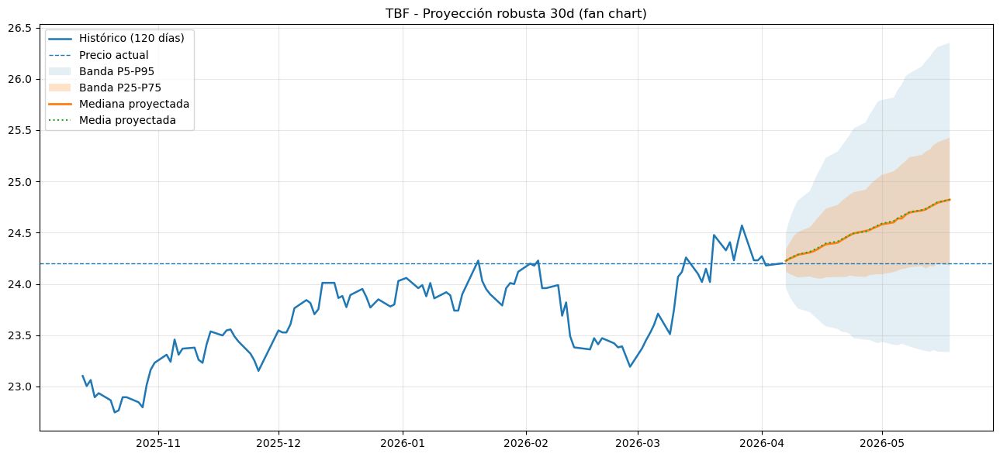
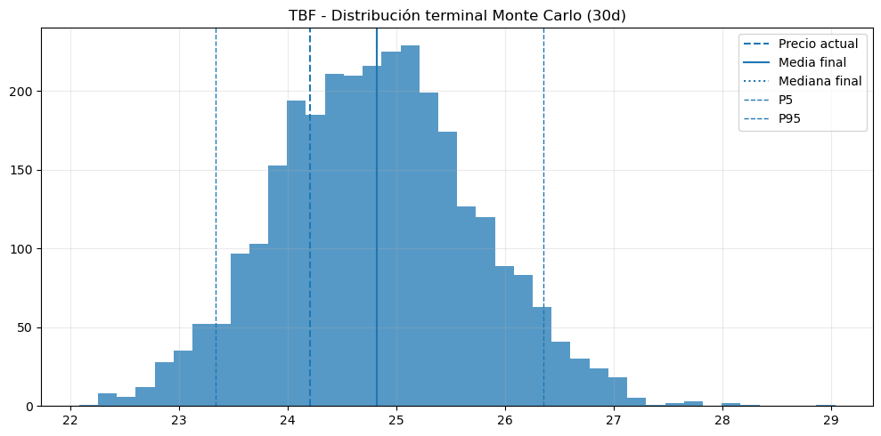
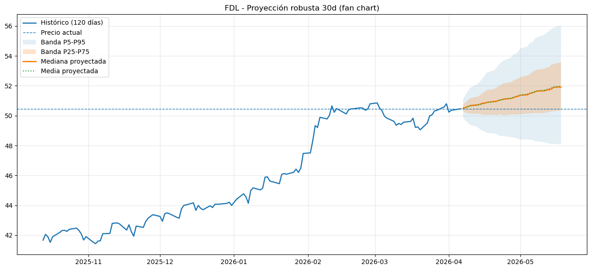
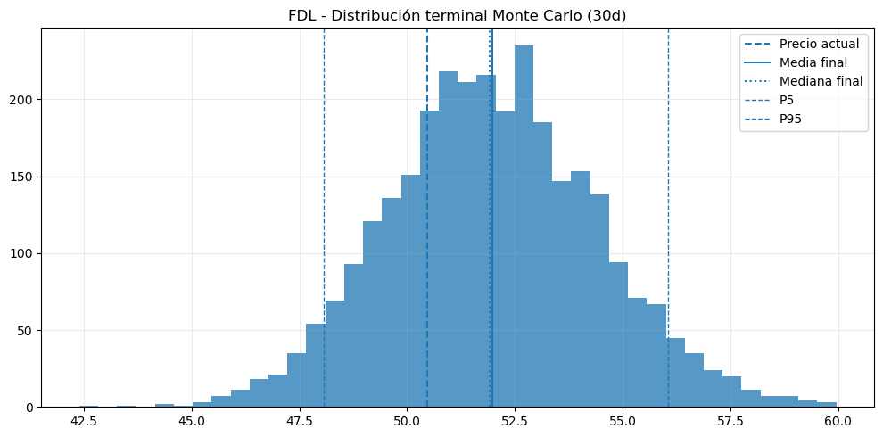
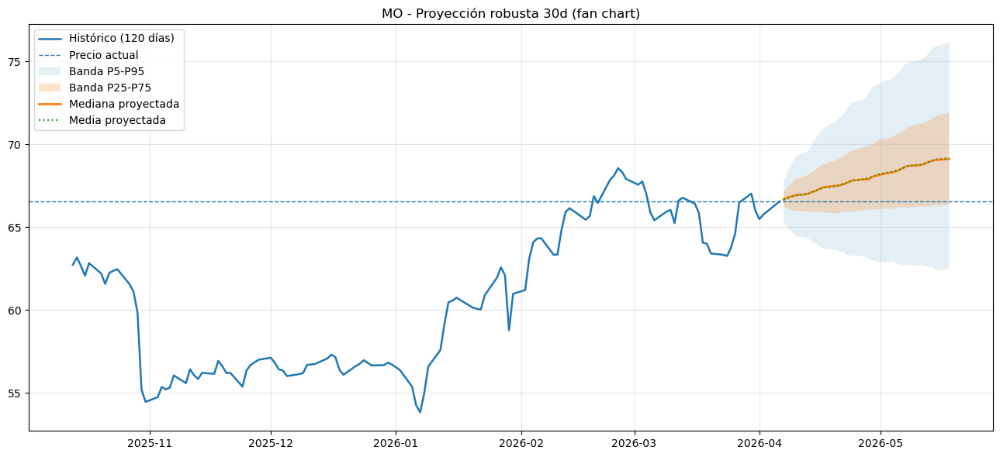
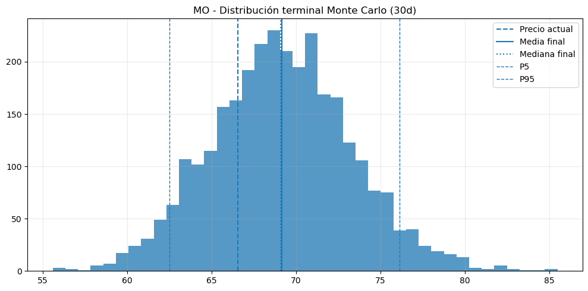
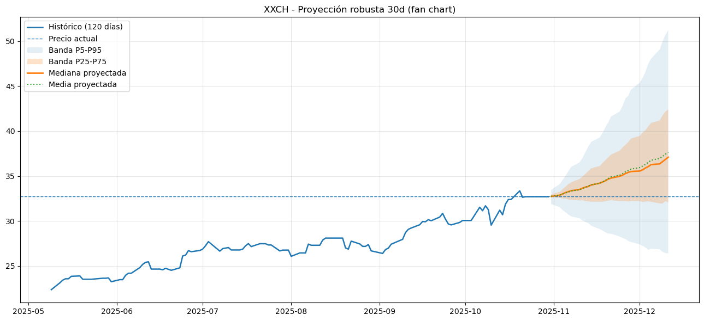
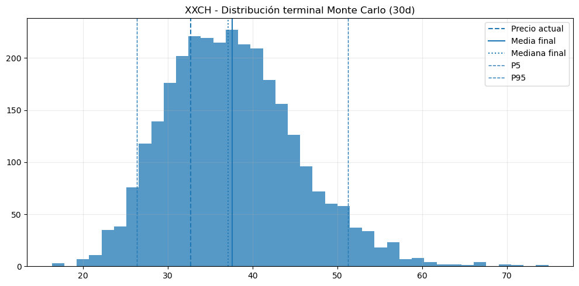
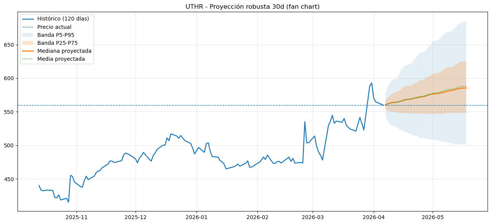
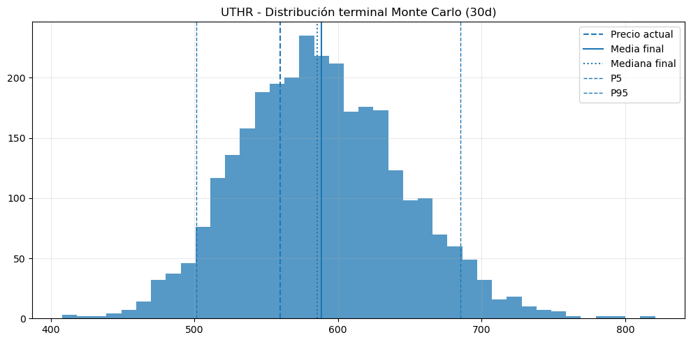

# ============================================================
# ZESTY SCREENER AUTOMATIZADO - VERSION ROBUSTA
# - Corrige errores de sintaxis del script original
# - Mantiene los tickers embebidos en el código
# - Reemplaza el Monte Carlo "spaghetti" por visuales más limpios:
# 1) Fan chart de percentiles
# 2) Histograma terminal
# - Usa ARIMA + GARCH-t + bootstrap de residuos estandarizados
# ============================================================
# Si falta instalar:
# !pip install yfinance pandas numpy matplotlib statsmodels arch scipy
from __future__ import annotations
import warnings
from dataclasses import dataclass
from typing import Dict, List, Optional, Tuple
import numpy as np
import pandas as pd
import matplotlib.pyplot as plt
import yfinance as yf
from statsmodels.tsa.arima.model import ARIMA
from arch import arch_model
# ------------------------------------------------------------
# CONFIG
# ------------------------------------------------------------
PERIODO = "5y"
TOP_N = 30
DIAS_PROYECCION = 30
N_SIM = 3000
SEED = 42
MIN_DIAS = 260
HIST_DIAS_GRAFICO = 120
TOP_GRAFICOS = 5
# Método de simulación:
# "bootstrap" -> más robusto ante colas pesadas
# "normal" -> más simple
MC_METODO = "bootstrap"
ARIMA_CANDIDATOS = [
(1, 0, 0),
(1, 0, 1),
(2, 0, 0),
(2, 0, 1),
(1, 1, 0),
(1, 1, 1),
(2, 1, 0),
(2, 1, 1),
]
warnings.filterwarnings("ignore", category=UserWarning)
warnings.filterwarnings("ignore", category=FutureWarning)
RNG = np.random.default_rng(SEED)
# ------------------------------------------------------------
# TICKERS EMBEBIDOS
# ------------------------------------------------------------
TICKERS = sorted(list(set([
"FDL","KO","NOBL","RDIV","SDIV","SPYD","SRET","VIG","VYM","VYMI","BIZD","DJD","DVYE","JEPQ",
"MLPA","OEUR","PFRL","PRF","SDOG","TLTW","BMY","KBWD","MO","PEP","PEY","PM","SCHD","SPHD",
"TTAI","VZ","COST","DUK","GILD","LMT","MCD","MDT","MMM","OMF","STLA","DOC","ET","KMI",
"PBR","PFE","RIO","T","UGI","VALE","BETZ","BJK","ESPO","GAMR","HERO","MSFT","NERD","NVDA",
"ODDS","TCEHY","CMCM","EA","HUYA","NTDOY","NTES","RBLX","TTWO","AOA","AOK","AOM","AOR","NTSX",
"ARKG","AXSM","BBH","BIB","BMRN","CRSP","EXEL","FBT","GNOM","IBB","IDNA","INCY","IONS","JAZZ",
"MRNA","NVAX","NVO","PBE","REGN","UTHR","XBI","ABT","DHR","ELV","SYK","TMO","UNH","VHT",
"XLV","BSX","HCA","HUM","IXJ","PHG","TECH","AMAT","AMD","ARM","ASML","DELL","INTC","LRCX",
"SMCI","TSM","APH","AVGO","CDNS","KLAC","MRVL","MU","NXPI","SNPS","STX","TXN","GLW","GRMN",
"IFNNY","MCHP","MPWR","MRAAY","ON","RNECY","STM","TEL","ATEYY","FTV","GFS","AMZN","GOOGL","META",
"PLTR","ACN","AI","ARKQ","BIDU","BOTZ","DOCU","IXN","IYW","KOMP","VGT","XLK","XT","CEG",
"NRG","SPCX","CLS","LMB","NVT","VRT","BITI","LABD","MSFD","NVDD","SOXS","SPXS","SQQQ","TMV",
"TSLZ","YANG","AAPD","AMZD","SRTY","TUSI","YEAR","YXI","ZIVB","SMDD","SPXU","SVIX","TBF","TBUX",
"TBX","TSDD","TSLI","TTT","REK","RWM","SARK","SBB","SDOW","SEF","SETH","SH","SHRT","SHV",
"EUM","FLUD","FUMB","JMST","JPST","MYY","NVD","OPER","PSQ","PULT","AIBD","BAMU","BILZ","CRSH",
"DGZ","DOG","DWSH","DZZ","EFZ","TZA","ERY","FAZ","GGLS","HIBS","JDST","QQAD","SPDN","TSLQ",
"TSLS","NVDU","TSLL","UVIX","XXCH","SPUU","TARK","TIPD","TSL","TSLT","UBOT","USML","OOTO","PFFL",
"QQQU","QULL","SCDL","SKRE","SMHB","MSFL","MSFX","MSOX","MTUL","NUGT","NVDL","NVDX","INDL","IWDL",
"IWML","JNUG","MAGX","ESUS","EVAV","FNGG","FNGO","GOOX","GUSH","HDLB","BITX","BRZU","CHAU","CLDL",
"CWEB","DRIP","DUST","ERX","AAPB","AAPX","AIBU","AMDL","AMZZ","WTID","WTIU","YINN","TNA","TPOR",
"TYD","TYO","UTSL","WANT","WEBL","WEBS","PILL","RETL","TMF","SHNY","SOXL","SPXL","TECL","TECS",
"KORU","LABU","MEXX","MIDU","NAIL","NRGD","NRGU","OILD","OILU","FLYD","FLYU","FNGD","FNGU","GDXD",
"GDXU","HIBL","JETD","JETU","DPST","DRN","DRV","DULL","DUSL","EDC","EDZ","EURL","FAS","BERZ",
"BNKD","BNKU","BULZ","CARD","CARU","CURE","DFEN","SPYU","AETH","ARKZ","CETH","ETH","ETHA","ETHV",
"ETHW","FETH","QETH","EFUT","ETHE","IVV","RSP","SPLG","SPY","SPYG","VOO","VOOV","QDIV","SSO",
"ACWI","BIL","QQQ","VEA","VTI","VUG","AGG","EEM","EWZ","IEFA","IWM","MCHI","SOXX","TLT",
"BND","URTH","USMV","USSG","SIZE","SMIN","SMLF","SMMV","SUSA","TCHI","UBR","VLUE","BNO","CPER",
"DBA","DBB","DBC","GLD","IAU","SLV","UGA","UNG","USCI","USO","WEAT","ESGD","ESGE","ESGU",
"ESGV","EUSB","ICLN","PHO","QCLN","SUSB","TAN","USXF","VSGX","ARGT","ECH","EDEN","EFNL","EWA",
"EWC","EWK","EWO","EIDO","EIRL","EIS","EWG","EWI","EWJ","EWQ","GREK","KWT","PIN","ENZL",
"EPHE","EPOL","EPU","EWM","EWN","EWS","KSA","NORW","QAT","EWD","EWL","EWP","EWT","EWU",
"EWY","EZA","THD","TUR","UAE","FLTW","UPV","VGK","VNM","VPL","XPP","FLIN","FLJH","FLJP",
"FLKR","FLLA","FLMX","FLSA","FLSW","FLBR","FLCA","FLCH","FLEE","FLEU","FLGB","FLGR","FLHK","AFTY",
"ASEA","COLO","EPV","FLAU","FLAX","KALL","KBA","KURE","SCJ","EWJV","EWUS","EWV","EWW","EWZS",
"EZJ",
])))
# ------------------------------------------------------------
# UTILIDADES
# ------------------------------------------------------------
@dataclass
class ResultadoModelo:
ticker: str
precio_actual: float
tendencia: str
rsi14: float
mejor_arima: str
aic: float
bic: float
vol_garch_d1: float
mc: Dict[str, float]
score_final: int
senal_final: str
def descargar_datos(ticker: str, period: str = PERIODO) -> Optional[pd.DataFrame]:
"""
Descarga datos ajustados.
Devuelve None si el ticker falla o no tiene historia suficiente.
"""
try:
df = yf.download(
ticker,
period=period,
interval="1d",
auto_adjust=True,
progress=False,
threads=False,
)
if df is None or df.empty:
return None
if isinstance(df.columns, pd.MultiIndex):
df.columns = df.columns.get_level_values(0)
cols_necesarias = [c for c in ["Close", "Volume"] if c in df.columns]
if "Close" not in cols_necesarias:
return None
df = df[cols_necesarias].copy()
if "Volume" not in df.columns:
df["Volume"] = np.nan
df = df.dropna(subset=["Close"]).sort_index()
if len(df) < MIN_DIAS:
return None
return df
except Exception:
return None
def calcular_rsi(serie: pd.Series, periodo: int = 14) -> pd.Series:
delta = serie.diff()
gain = delta.clip(lower=0)
loss = -delta.clip(upper=0)
avg_gain = gain.ewm(alpha=1 / periodo, adjust=False, min_periods=periodo).mean()
avg_loss = loss.ewm(alpha=1 / periodo, adjust=False, min_periods=periodo).mean()
rs = avg_gain / avg_loss.replace(0, np.nan)
rsi = 100 - (100 / (1 + rs))
return rsi.clip(0, 100)
def preparar(df: pd.DataFrame) -> pd.DataFrame:
out = df.copy()
out["MA20"] = out["Close"].rolling(20).mean()
out["MA50"] = out["Close"].rolling(50).mean()
out["MA100"] = out["Close"].rolling(100).mean()
out["MA200"] = out["Close"].rolling(200).mean()
out["RSI14"] = calcular_rsi(out["Close"], 14)
out["RetLog"] = np.log(out["Close"] / out["Close"].shift(1))
out["Ret3M"] = out["Close"].pct_change(63)
out["Ret6M"] = out["Close"].pct_change(126)
out["Vol20"] = out["RetLog"].rolling(20).std() * np.sqrt(252) * 100
return out.dropna().copy()
def clasificar_tendencia(df: pd.DataFrame) -> str:
u = df.iloc[-1]
p = df.iloc[-2]
precio = float(u["Close"])
ma20 = float(u["MA20"])
ma50 = float(u["MA50"])
ma100 = float(u["MA100"])
ma200 = float(u["MA200"])
s20 = float(u["MA20"] - p["MA20"])
s50 = float(u["MA50"] - p["MA50"])
s200 = float(u["MA200"] - p["MA200"])
if precio > ma20 > ma50 > ma100 > ma200 and s20 > 0 and s50 > 0:
return "ALCISTA"
if precio < ma20 < ma50 < ma100 < ma200 and s20 < 0 and s50 < 0:
return "BAJISTA"
if precio > ma200 and s200 >= 0:
return "NEUTRA_ALCISTA"
if precio < ma200 and s200 <= 0:
return "NEUTRA_BAJISTA"
return "MIXTA"
def score_rapido(df: pd.DataFrame) -> Dict[str, float]:
u = df.iloc[-1]
tendencia = clasificar_tendencia(df)
rsi = float(u["RSI14"])
ret3 = float(u["Ret3M"] * 100)
ret6 = float(u["Ret6M"] * 100)
vol = float(u["Vol20"])
score = 0
if tendencia == "ALCISTA":
score += 3
elif tendencia == "NEUTRA_ALCISTA":
score += 1
elif tendencia == "BAJISTA":
score -= 3
elif tendencia == "NEUTRA_BAJISTA":
score -= 1
if 50 <= rsi <= 65:
score += 2
elif 65 < rsi <= 75:
score += 1
elif rsi < 40:
score -= 2
elif rsi > 80:
score -= 1
score += 1 if ret3 > 0 else -1
score += 1 if ret6 > 0 else -1
if vol > 55:
score -= 1
if score >= 5:
senal = "FAVORABLE"
elif score <= -2:
senal = "DESFAVORABLE"
else:
senal = "ESPERAR"
return {
"Precio": round(float(u["Close"]), 2),
"Tendencia": tendencia,
"RSI14": round(rsi, 2),
"Ret3M %": round(ret3, 2),
"Ret6M %": round(ret6, 2),
"Vol20 anual %": round(vol, 2),
"Score rápido": score,
"Señal rápida": senal,
}
def seleccionar_arima(serie: pd.Series) -> Tuple[Optional[object], Optional[Tuple[int, int, int]], Optional[pd.DataFrame]]:
"""
Ajusta ARIMA sobre array numpy para evitar warnings de frecuencia.
"""
y = np.asarray(serie.dropna(), dtype=float)
if len(y) < 80:
return None, None, None
resultados = []
for orden in ARIMA_CANDIDATOS:
try:
fit = ARIMA(y, order=orden).fit()
if np.isfinite(fit.aic) and np.isfinite(fit.bic):
resultados.append((orden, fit.aic, fit.bic, fit))
except Exception:
continue
if not resultados:
return None, None, None
resultados = sorted(resultados, key=lambda x: (x[1], x[2]))
mejor = resultados[0]
tabla = pd.DataFrame(
[
{"ARIMA": str(r[0]), "AIC": float(r[1]), "BIC": float(r[2])}
for r in resultados
]
).sort_values(["AIC", "BIC"]).reset_index(drop=True)
return mejor[3], mejor[0], tabla
def ajustar_garch(retornos: pd.Series) -> Tuple[Optional[object], Optional[np.ndarray], Optional[np.ndarray]]:
"""
GARCH(1,1) con distribución t para robustez.
Devuelve:
fit,
sigma_futura (array horizonte),
residuos_estandarizados_hist
"""
y = np.asarray(retornos.dropna() * 100.0, dtype=float)
if len(y) < 120:
return None, None, None
try:
fit = arch_model(
y,
mean="Zero",
vol="Garch",
p=1,
q=1,
dist="t",
rescale=False,
).fit(disp="off")
fc = fit.forecast(horizon=DIAS_PROYECCION, reindex=False)
var_futura = np.asarray(fc.variance.values[-1], dtype=float)
sigma_futura = np.sqrt(np.maximum(var_futura, 1e-12)) / 100.0
resid_std = pd.Series(np.asarray(fit.std_resid, dtype=float)).replace([np.inf, -np.inf], np.nan).dropna()
resid_std = resid_std.clip(lower=resid_std.quantile(0.01), upper=resid_std.quantile(0.99))
resid_std = resid_std.to_numpy(dtype=float)
if len(resid_std) < 50:
resid_std = None
return fit, sigma_futura, resid_std
except Exception:
return None, None, None
def simular_mc(precio_actual: float, drift: np.ndarray, sigma: np.ndarray, resid_std: Optional[np.ndarray]) -> np.ndarray:
"""
Monte Carlo vectorizado.
Método robusto:
shock_t = drift_t + sigma_t * z_t
donde z_t viene de bootstrap histórico de residuos estandarizados.
"""
drift = np.asarray(drift, dtype=float).reshape(-1)
sigma = np.asarray(sigma, dtype=float).reshape(-1)
if len(drift) != DIAS_PROYECCION or len(sigma) != DIAS_PROYECCION:
raise ValueError("drift y sigma deben tener longitud DIAS_PROYECCION")
if MC_METODO == "bootstrap" and resid_std is not None and len(resid_std) >= 50:
z = RNG.choice(resid_std, size=(DIAS_PROYECCION, N_SIM), replace=True)
else:
z = RNG.standard_normal(size=(DIAS_PROYECCION, N_SIM))
shocks = drift[:, None] + sigma[:, None] * z
log_paths = np.cumsum(shocks, axis=0)
sims = precio_actual * np.exp(log_paths)
return sims
def resumir_mc(precio_actual: float, sims: np.ndarray) -> Dict[str, float]:
finales = sims[-1, :]
p5 = np.percentile(finales, 5)
p25 = np.percentile(finales, 25)
p50 = np.percentile(finales, 50)
p75 = np.percentile(finales, 75)
p95 = np.percentile(finales, 95)
media = np.mean(finales)
prob_subir = np.mean(finales > precio_actual) * 100.0
ret_esp = (media / precio_actual - 1.0) * 100.0
var_5 = (p5 / precio_actual - 1.0) * 100.0
cvar_5 = (np.mean(finales[finales <= p5]) / precio_actual - 1.0) * 100.0 if np.any(finales <= p5) else var_5
return {
"Precio esperado 30d": round(media, 2),
"P5": round(p5, 2),
"P25": round(p25, 2),
"P50": round(p50, 2),
"P75": round(p75, 2),
"P95": round(p95, 2),
"Prob subir %": round(prob_subir, 2),
"Ret esp %": round(ret_esp, 2),
"VaR 5% 30d": round(var_5, 2),
"CVaR 5% 30d": round(cvar_5, 2),
"Ancho P25-P75": round(p75 - p25, 2),
"Ancho P5-P95": round(p95 - p5, 2),
}
def senal_final(df: pd.DataFrame, mc: Dict[str, float], sigma: np.ndarray) -> Tuple[int, str, float]:
tendencia = clasificar_tendencia(df)
rsi = float(df["RSI14"].iloc[-1])
vol_d1 = float(sigma[0] * 100.0)
score = 0
if tendencia == "ALCISTA":
score += 2
elif tendencia == "NEUTRA_ALCISTA":
score += 1
elif tendencia == "BAJISTA":
score -= 2
elif tendencia == "NEUTRA_BAJISTA":
score -= 1
if 50 <= rsi <= 65:
score += 1
elif rsi < 40:
score -= 1
elif rsi > 75:
score -= 1
if mc["Prob subir %"] >= 58:
score += 1
elif mc["Prob subir %"] <= 45:
score -= 1
if mc["Ret esp %"] > 2:
score += 1
elif mc["Ret esp %"] < 0:
score -= 1
if vol_d1 > 2.5:
score -= 1
if score >= 3:
senal = "FAVORABLE"
elif score <= -2:
senal = "DESFAVORABLE"
else:
senal = "ESPERAR"
return score, senal, round(vol_d1, 4)
# ------------------------------------------------------------
# GRAFICOS MONTE CARLO - VERSION LIMPIA
# ------------------------------------------------------------
def plot_fan_chart(
ticker: str,
hist: pd.Series,
precio_actual: float,
sims: np.ndarray,
dias_proyeccion: int = DIAS_PROYECCION,
mostrar_paths: int = 0,
) -> None:
"""
Reemplaza el spaghetti plot por fan chart.
"""
fechas_futuras = pd.bdate_range(start=hist.index[-1], periods=dias_proyeccion + 1)[1:]
media = np.mean(sims, axis=1)
mediana = np.median(sims, axis=1)
p5 = np.percentile(sims, 5, axis=1)
p25 = np.percentile(sims, 25, axis=1)
p75 = np.percentile(sims, 75, axis=1)
p95 = np.percentile(sims, 95, axis=1)
plt.figure(figsize=(13, 6))
plt.plot(hist.index, hist.values, linewidth=1.8, label="Histórico (120 días)")
plt.axhline(precio_actual, linestyle="--", linewidth=1, label="Precio actual")
if mostrar_paths > 0:
n_paths = min(mostrar_paths, sims.shape[1])
idx = RNG.choice(sims.shape[1], size=n_paths, replace=False)
for j in idx:
plt.plot(fechas_futuras, sims[:, j], alpha=0.08, linewidth=0.8)
plt.fill_between(fechas_futuras, p5, p95, alpha=0.12, label="Banda P5-P95")
plt.fill_between(fechas_futuras, p25, p75, alpha=0.22, label="Banda P25-P75")
plt.plot(fechas_futuras, mediana, linewidth=2.0, label="Mediana proyectada")
plt.plot(fechas_futuras, media, linewidth=1.5, linestyle=":", label="Media proyectada")
plt.title(f"{ticker} - Proyección robusta 30d (fan chart)")
plt.legend()
plt.grid(True, alpha=0.3)
plt.tight_layout()
plt.show()
def plot_terminal_distribution(ticker: str, precio_actual: float, sims: np.ndarray) -> None:
finales = sims[-1, :]
media = np.mean(finales)
mediana = np.median(finales)
p5 = np.percentile(finales, 5)
p95 = np.percentile(finales, 95)
plt.figure(figsize=(10, 5))
plt.hist(finales, bins=40, alpha=0.75)
plt.axvline(precio_actual, linestyle="--", linewidth=1.5, label="Precio actual")
plt.axvline(media, linewidth=1.5, label="Media final")
plt.axvline(mediana, linewidth=1.5, linestyle=":", label="Mediana final")
plt.axvline(p5, linewidth=1, linestyle="--", label="P5")
plt.axvline(p95, linewidth=1, linestyle="--", label="P95")
plt.title(f"{ticker} - Distribución terminal Monte Carlo (30d)")
plt.legend()
plt.grid(True, alpha=0.25)
plt.tight_layout()
plt.show()
# ------------------------------------------------------------
# ETAPA 1: FILTRO RAPIDO
# ------------------------------------------------------------
rapido: List[Dict[str, float]] = []
fallidos: List[Tuple[str, str]] = []
print(f"Total de tickers cargados en el código: {len(TICKERS)}")
for ticker in TICKERS:
df = descargar_datos(ticker, PERIODO)
if df is None:
fallidos.append((ticker, "sin datos o historia insuficiente"))
continue
try:
df_prep = preparar(df)
r = score_rapido(df_prep)
r["Ticker"] = ticker
rapido.append(r)
except Exception as e:
fallidos.append((ticker, f"error preparación: {type(e).__name__}"))
df_rapido = pd.DataFrame(rapido)
if not df_rapido.empty:
df_rapido = (
df_rapido[
[
"Ticker",
"Precio",
"Tendencia",
"RSI14",
"Ret3M %",
"Ret6M %",
"Vol20 anual %",
"Score rápido",
"Señal rápida",
]
]
.sort_values(["Score rápido", "Ret6M %", "Ret3M %"], ascending=[False, False, False])
.reset_index(drop=True)
)
print("\n================ FILTRO RAPIDO - TODOS ================\n")
display(df_rapido)
print(f"\nTickers analizados con éxito: {len(df_rapido)}")
print(f"Tickers fallidos/sin datos suficientes: {len(fallidos)}")
if fallidos:
df_fallidos = pd.DataFrame(fallidos, columns=["Ticker", "Motivo"])
display(df_fallidos.head(20))
# ------------------------------------------------------------
# ETAPA 2: ANALISIS PROFUNDO SOLO TOP_N
# ------------------------------------------------------------
top_tickers = df_rapido.head(TOP_N)["Ticker"].tolist()
profundo: List[Dict[str, float]] = []
for ticker in top_tickers:
df = descargar_datos(ticker, PERIODO)
if df is None:
continue
try:
df = preparar(df)
precio_actual = float(df["Close"].iloc[-1])
retornos = df["RetLog"].dropna()
arima_fit, mejor_orden, _ = seleccionar_arima(retornos)
if arima_fit is None or mejor_orden is None:
continue
drift = np.asarray(arima_fit.forecast(steps=DIAS_PROYECCION), dtype=float)
garch_fit, sigma_30, resid_std = ajustar_garch(retornos)
if sigma_30 is None:
continue
sims = simular_mc(precio_actual, drift, sigma_30, resid_std)
mc = resumir_mc(precio_actual, sims)
score_final, senal_final_txt, vol_garch_d1 = senal_final(df, mc, sigma_30)
profundo.append(
{
"Ticker": ticker,
"Precio": round(precio_actual, 2),
"Tendencia": clasificar_tendencia(df),
"RSI14": round(float(df["RSI14"].iloc[-1]), 2),
"Mejor ARIMA": str(mejor_orden),
"AIC": round(float(arima_fit.aic), 2),
"BIC": round(float(arima_fit.bic), 2),
"Vol GARCH d1 %": vol_garch_d1,
**mc,
"Score final": score_final,
"Señal final": senal_final_txt,
}
)
except Exception:
continue
df_profundo = pd.DataFrame(profundo)
if not df_profundo.empty:
df_profundo = (
df_profundo[
[
"Ticker",
"Precio",
"Tendencia",
"RSI14",
"Mejor ARIMA",
"AIC",
"BIC",
"Vol GARCH d1 %",
"Precio esperado 30d",
"P5",
"P25",
"P50",
"P75",
"P95",
"Prob subir %",
"Ret esp %",
"VaR 5% 30d",
"CVaR 5% 30d",
"Ancho P25-P75",
"Ancho P5-P95",
"Score final",
"Señal final",
]
]
.sort_values(["Score final", "Prob subir %", "Ret esp %"], ascending=[False, False, False])
.reset_index(drop=True)
)
print(f"\n================ ANALISIS PROFUNDO - TOP {TOP_N} ================\n")
display(df_profundo)
print("\n================ RESUMEN DE SEÑALES FINALES ================\n")
display(
df_profundo[
[
"Ticker",
"Score final",
"Señal final",
"Prob subir %",
"Ret esp %",
"VaR 5% 30d",
"CVaR 5% 30d",
"Vol GARCH d1 %",
]
]
)
# ------------------------------------------------------------
# GRAFICOS OPCIONALES DE LOS 5 MEJORES
# ------------------------------------------------------------
if not df_profundo.empty:
mejores = df_profundo.head(TOP_GRAFICOS)["Ticker"].tolist()
for ticker in mejores:
df = descargar_datos(ticker, PERIODO)
if df is None:
continue
try:
df = preparar(df)
precio_actual = float(df["Close"].iloc[-1])
retornos = df["RetLog"].dropna()
arima_fit, _, _ = seleccionar_arima(retornos)
garch_fit, sigma_30, resid_std = ajustar_garch(retornos)
if arima_fit is None or sigma_30 is None:
continue
drift = np.asarray(arima_fit.forecast(steps=DIAS_PROYECCION), dtype=float)
sims = simular_mc(precio_actual, drift, sigma_30, resid_std)
hist = df["Close"].tail(HIST_DIAS_GRAFICO)
plot_fan_chart(
ticker=ticker,
hist=hist,
precio_actual=precio_actual,
sims=sims,
mostrar_paths=0, # súbelo a 15 si quieres ver algunas trayectorias
)
plot_terminal_distribution(
ticker=ticker,
precio_actual=precio_actual,
sims=sims,
)
except Exception:
continueTotal de tickers cargados en el código: 477
1 Failed download:
['ABT']: TypeError("'Response' object is not subscriptable")
1 Failed download:
['AGG']: TypeError("'Response' object is not subscriptable")
1 Failed download:
['AMDL']: TypeError("'Response' object is not subscriptable")
HTTP Error 404: {"quoteSummary":{"result":null,"error":{"code":"Not Found","description":"Quote not found for symbol: QQAD"}}}
$QQAD: possibly delisted; no price data found (period=5y) (Yahoo error = "No data found, symbol may be delisted")
1 Failed download:
['QQAD']: possibly delisted; no price data found (period=5y) (Yahoo error = "No data found, symbol may be delisted")
================ FILTRO RAPIDO - TODOS ================
| Ticker | Precio | Tendencia | RSI14 | Ret3M % | Ret6M % | Vol20 anual % | Score rápido | Señal rápida | |
|---|---|---|---|---|---|---|---|---|---|
| 0 | ERX | 97.73 | ALCISTA | 56.90 | 68.87 | 79.01 | 45.79 | 7 | FAVORABLE |
| 1 | AMAT | 352.62 | ALCISTA | 51.79 | 31.31 | 58.21 | 52.15 | 7 | FAVORABLE |
| 2 | XXCH | 32.70 | ALCISTA | 62.82 | 22.21 | 53.84 | 40.10 | 7 | FAVORABLE |
| 3 | MSFD | 14.65 | ALCISTA | 59.97 | 25.18 | 37.01 | 22.09 | 7 | FAVORABLE |
| 4 | JAZZ | 186.85 | ALCISTA | 56.24 | 7.91 | 36.18 | 25.15 | 7 | FAVORABLE |
| ... | ... | ... | ... | ... | ... | ... | ... | ... | ... |
| 465 | CWEB | 26.17 | BAJISTA | 35.64 | -39.73 | -54.91 | 59.68 | -8 | DESFAVORABLE |
| 466 | SMCI | 22.05 | BAJISTA | 36.79 | -28.78 | -58.00 | 158.79 | -8 | DESFAVORABLE |
| 467 | WTID | 4.38 | BAJISTA | 35.64 | -60.23 | -63.94 | 75.12 | -8 | DESFAVORABLE |
| 468 | OILD | 39.62 | BAJISTA | 36.30 | -58.47 | -64.59 | 66.79 | -8 | DESFAVORABLE |
| 469 | NRGD | 26.33 | BAJISTA | 33.11 | -65.30 | -68.39 | 79.49 | -8 | DESFAVORABLE |
470 rows × 9 columns
Tickers analizados con éxito: 470
Tickers fallidos/sin datos suficientes: 7| Ticker | Motivo | |
|---|---|---|
| 0 | ABT | sin datos o historia insuficiente |
| 1 | AGG | sin datos o historia insuficiente |
| 2 | AMDL | sin datos o historia insuficiente |
| 3 | EFUT | sin datos o historia insuficiente |
| 4 | QQAD | sin datos o historia insuficiente |
| 5 | TIPD | sin datos o historia insuficiente |
| 6 | TSLI | sin datos o historia insuficiente |
================ ANALISIS PROFUNDO - TOP 30 ================
| Ticker | Precio | Tendencia | RSI14 | Mejor ARIMA | AIC | BIC | Vol GARCH d1 % | Precio esperado 30d | P5 | ... | P75 | P95 | Prob subir % | Ret esp % | VaR 5% 30d | CVaR 5% 30d | Ancho P25-P75 | Ancho P5-P95 | Score final | Señal final | |
|---|---|---|---|---|---|---|---|---|---|---|---|---|---|---|---|---|---|---|---|---|---|
| 0 | TBF | 24.20 | ALCISTA | 53.46 | (2, 0, 0) | -6696.94 | -6677.09 | 0.6814 | 24.83 | 23.41 | ... | 25.42 | 26.33 | 74.93 | 2.59 | -3.25 | -4.65 | 1.22 | 2.92 | 5 | FAVORABLE |
| 1 | FDL | 50.46 | ALCISTA | 59.56 | (1, 0, 0) | -6862.79 | -6847.90 | 0.7552 | 51.98 | 48.05 | ... | 53.53 | 55.89 | 73.93 | 3.02 | -4.78 | -6.51 | 3.15 | 7.85 | 5 | FAVORABLE |
| 2 | MO | 66.55 | ALCISTA | 57.09 | (1, 0, 1) | -6180.95 | -6161.10 | 1.2617 | 69.28 | 62.21 | ... | 72.11 | 76.65 | 73.73 | 4.10 | -6.52 | -9.17 | 5.72 | 14.44 | 5 | FAVORABLE |
| 3 | XXCH | 32.70 | ALCISTA | 62.82 | (2, 0, 1) | -1146.73 | -1129.43 | 2.3619 | 37.50 | 26.39 | ... | 42.04 | 51.31 | 72.07 | 14.66 | -19.28 | -27.32 | 9.88 | 24.92 | 5 | FAVORABLE |
| 4 | UTHR | 559.65 | ALCISTA | 58.05 | (1, 0, 0) | -5052.77 | -5037.89 | 2.2397 | 586.92 | 497.40 | ... | 621.61 | 684.17 | 67.67 | 4.87 | -11.12 | -14.74 | 73.88 | 186.78 | 5 | FAVORABLE |
| 5 | TYO | 13.67 | ALCISTA | 56.13 | (2, 0, 0) | -5830.21 | -5810.36 | 1.1036 | 14.02 | 12.68 | ... | 14.56 | 15.43 | 65.03 | 2.60 | -7.20 | -9.33 | 1.11 | 2.75 | 5 | FAVORABLE |
| 6 | PULT | 50.28 | ALCISTA | 55.45 | (2, 0, 0) | -7880.64 | -7863.03 | 0.0403 | 50.91 | 50.76 | ... | 50.97 | 51.07 | 100.00 | 1.25 | 0.95 | 0.87 | 0.12 | 0.31 | 4 | FAVORABLE |
| 7 | JPST | 50.45 | ALCISTA | 63.72 | (1, 0, 0) | -13672.09 | -13657.21 | 0.0433 | 50.96 | 50.79 | ... | 51.02 | 51.13 | 100.00 | 1.00 | 0.67 | 0.59 | 0.14 | 0.35 | 4 | FAVORABLE |
| 8 | BAMU | 25.24 | ALCISTA | 62.47 | (1, 0, 1) | -5391.59 | -5375.31 | 0.0445 | 25.43 | 25.33 | ... | 25.47 | 25.53 | 99.97 | 0.77 | 0.37 | 0.28 | 0.08 | 0.20 | 4 | FAVORABLE |
| 9 | JMST | 50.93 | ALCISTA | 61.02 | (1, 0, 0) | -12912.83 | -12897.94 | 0.0477 | 51.27 | 51.04 | ... | 51.37 | 51.50 | 99.37 | 0.68 | 0.22 | 0.10 | 0.19 | 0.46 | 4 | FAVORABLE |
| 10 | FLUD | 24.93 | ALCISTA | 55.53 | (1, 0, 1) | -12025.70 | -12005.85 | 0.0988 | 25.22 | 25.01 | ... | 25.30 | 25.44 | 98.70 | 1.14 | 0.32 | 0.10 | 0.17 | 0.42 | 4 | FAVORABLE |
| 11 | USCI | 96.63 | ALCISTA | 66.29 | (2, 0, 0) | -6383.61 | -6363.76 | 1.1357 | 101.20 | 91.64 | ... | 105.12 | 111.01 | 77.87 | 4.73 | -5.16 | -7.60 | 7.88 | 19.38 | 4 | FAVORABLE |
| 12 | PBR | 20.86 | ALCISTA | 69.83 | (1, 0, 0) | -4928.69 | -4913.80 | 2.2618 | 22.84 | 18.55 | ... | 24.53 | 27.47 | 76.87 | 9.48 | -11.05 | -15.23 | 3.55 | 8.91 | 4 | FAVORABLE |
| 13 | NVT | 117.41 | ALCISTA | 50.72 | (2, 0, 0) | -4966.02 | -4946.17 | 2.6993 | 127.50 | 103.35 | ... | 137.54 | 154.32 | 73.73 | 8.60 | -11.98 | -16.51 | 20.87 | 50.97 | 4 | FAVORABLE |
| 14 | TBX | 28.11 | ALCISTA | 56.87 | (2, 0, 0) | -7963.47 | -7943.62 | 0.4288 | 28.54 | 27.45 | ... | 28.99 | 29.69 | 73.67 | 1.54 | -2.35 | -3.23 | 0.92 | 2.24 | 4 | FAVORABLE |
| 15 | GLW | 146.50 | ALCISTA | 57.91 | (1, 0, 0) | -5135.93 | -5121.04 | 4.2031 | 169.12 | 117.54 | ... | 191.00 | 232.02 | 72.80 | 15.44 | -19.77 | -25.96 | 46.55 | 114.48 | 4 | FAVORABLE |
| 16 | KLAC | 1540.06 | ALCISTA | 56.46 | (1, 0, 0) | -4579.31 | -4564.42 | 2.9093 | 1702.53 | 1310.27 | ... | 1863.75 | 2148.54 | 72.70 | 10.55 | -14.92 | -20.12 | 338.03 | 838.27 | 4 | FAVORABLE |
| 17 | ERX | 97.73 | ALCISTA | 56.90 | (1, 0, 0) | -4227.03 | -4212.15 | 2.9573 | 105.33 | 79.58 | ... | 115.69 | 133.29 | 66.70 | 7.77 | -18.57 | -23.84 | 21.69 | 53.71 | 4 | FAVORABLE |
| 18 | DBC | 29.48 | ALCISTA | 66.29 | (1, 0, 0) | -6342.21 | -6327.33 | 1.5423 | 30.49 | 26.90 | ... | 31.99 | 34.49 | 65.90 | 3.43 | -8.77 | -11.57 | 3.11 | 7.59 | 4 | FAVORABLE |
| 19 | AMAT | 352.62 | ALCISTA | 51.79 | (1, 0, 0) | -4563.75 | -4548.86 | 3.2260 | 380.32 | 288.17 | ... | 418.67 | 488.78 | 65.80 | 7.86 | -18.28 | -23.82 | 82.18 | 200.61 | 4 | FAVORABLE |
| 20 | NORW | 38.33 | ALCISTA | 66.75 | (1, 0, 0) | -5982.95 | -5968.06 | 1.5298 | 39.32 | 34.57 | ... | 41.33 | 44.44 | 62.13 | 2.59 | -9.82 | -12.87 | 4.07 | 9.87 | 4 | FAVORABLE |
| 21 | WTIU | 20.95 | ALCISTA | 55.79 | (2, 0, 0) | -1979.84 | -1962.34 | 4.5353 | 22.43 | 15.47 | ... | 25.46 | 30.90 | 58.03 | 7.06 | -26.18 | -32.61 | 6.45 | 15.43 | 4 | FAVORABLE |
| 22 | GUSH | 42.77 | ALCISTA | 60.41 | (1, 0, 0) | -3696.90 | -3682.01 | 3.7546 | 45.07 | 32.22 | ... | 50.28 | 60.46 | 57.37 | 5.37 | -24.68 | -30.34 | 11.48 | 28.25 | 3 | FAVORABLE |
| 23 | JAZZ | 186.85 | ALCISTA | 56.24 | (1, 0, 0) | -5283.62 | -5268.73 | 1.7468 | 189.84 | 160.30 | ... | 201.87 | 220.42 | 54.10 | 1.60 | -14.21 | -17.48 | 24.56 | 60.12 | 3 | FAVORABLE |
| 24 | OILU | 50.87 | ALCISTA | 56.82 | (1, 0, 0) | -2993.88 | -2979.46 | 4.2753 | 52.61 | 35.64 | ... | 59.90 | 74.15 | 52.57 | 3.42 | -29.94 | -36.69 | 15.48 | 38.51 | 3 | FAVORABLE |
| 25 | MRAAY | 12.05 | ALCISTA | 56.44 | (1, 0, 0) | -5224.56 | -5209.68 | 2.8459 | 12.07 | 9.65 | ... | 13.08 | 14.86 | 47.47 | 0.14 | -19.90 | -24.18 | 2.10 | 5.20 | 2 | ESPERAR |
| 26 | YXI | 21.86 | ALCISTA | 55.22 | (1, 0, 0) | -5186.30 | -5171.41 | 1.7574 | 21.81 | 18.61 | ... | 23.14 | 25.52 | 47.10 | -0.20 | -14.89 | -18.59 | 2.76 | 6.92 | 2 | ESPERAR |
| 27 | MSFD | 14.65 | ALCISTA | 59.97 | (1, 0, 0) | -3900.01 | -3886.37 | 1.4642 | 14.58 | 12.90 | ... | 15.28 | 16.34 | 46.20 | -0.46 | -11.94 | -14.33 | 1.44 | 3.44 | 2 | ESPERAR |
| 28 | PFE | 27.83 | ALCISTA | 55.52 | (1, 0, 0) | -5793.77 | -5778.88 | 1.5666 | 27.19 | 23.71 | ... | 28.63 | 31.03 | 37.23 | -2.30 | -14.80 | -17.82 | 3.00 | 7.32 | 1 | ESPERAR |
29 rows × 22 columns
================ RESUMEN DE SEÑALES FINALES ================
| Ticker | Score final | Señal final | Prob subir % | Ret esp % | VaR 5% 30d | CVaR 5% 30d | Vol GARCH d1 % | |
|---|---|---|---|---|---|---|---|---|
| 0 | TBF | 5 | FAVORABLE | 74.93 | 2.59 | -3.25 | -4.65 | 0.6814 |
| 1 | FDL | 5 | FAVORABLE | 73.93 | 3.02 | -4.78 | -6.51 | 0.7552 |
| 2 | MO | 5 | FAVORABLE | 73.73 | 4.10 | -6.52 | -9.17 | 1.2617 |
| 3 | XXCH | 5 | FAVORABLE | 72.07 | 14.66 | -19.28 | -27.32 | 2.3619 |
| 4 | UTHR | 5 | FAVORABLE | 67.67 | 4.87 | -11.12 | -14.74 | 2.2397 |
| 5 | TYO | 5 | FAVORABLE | 65.03 | 2.60 | -7.20 | -9.33 | 1.1036 |
| 6 | PULT | 4 | FAVORABLE | 100.00 | 1.25 | 0.95 | 0.87 | 0.0403 |
| 7 | JPST | 4 | FAVORABLE | 100.00 | 1.00 | 0.67 | 0.59 | 0.0433 |
| 8 | BAMU | 4 | FAVORABLE | 99.97 | 0.77 | 0.37 | 0.28 | 0.0445 |
| 9 | JMST | 4 | FAVORABLE | 99.37 | 0.68 | 0.22 | 0.10 | 0.0477 |
| 10 | FLUD | 4 | FAVORABLE | 98.70 | 1.14 | 0.32 | 0.10 | 0.0988 |
| 11 | USCI | 4 | FAVORABLE | 77.87 | 4.73 | -5.16 | -7.60 | 1.1357 |
| 12 | PBR | 4 | FAVORABLE | 76.87 | 9.48 | -11.05 | -15.23 | 2.2618 |
| 13 | NVT | 4 | FAVORABLE | 73.73 | 8.60 | -11.98 | -16.51 | 2.6993 |
| 14 | TBX | 4 | FAVORABLE | 73.67 | 1.54 | -2.35 | -3.23 | 0.4288 |
| 15 | GLW | 4 | FAVORABLE | 72.80 | 15.44 | -19.77 | -25.96 | 4.2031 |
| 16 | KLAC | 4 | FAVORABLE | 72.70 | 10.55 | -14.92 | -20.12 | 2.9093 |
| 17 | ERX | 4 | FAVORABLE | 66.70 | 7.77 | -18.57 | -23.84 | 2.9573 |
| 18 | DBC | 4 | FAVORABLE | 65.90 | 3.43 | -8.77 | -11.57 | 1.5423 |
| 19 | AMAT | 4 | FAVORABLE | 65.80 | 7.86 | -18.28 | -23.82 | 3.2260 |
| 20 | NORW | 4 | FAVORABLE | 62.13 | 2.59 | -9.82 | -12.87 | 1.5298 |
| 21 | WTIU | 4 | FAVORABLE | 58.03 | 7.06 | -26.18 | -32.61 | 4.5353 |
| 22 | GUSH | 3 | FAVORABLE | 57.37 | 5.37 | -24.68 | -30.34 | 3.7546 |
| 23 | JAZZ | 3 | FAVORABLE | 54.10 | 1.60 | -14.21 | -17.48 | 1.7468 |
| 24 | OILU | 3 | FAVORABLE | 52.57 | 3.42 | -29.94 | -36.69 | 4.2753 |
| 25 | MRAAY | 2 | ESPERAR | 47.47 | 0.14 | -19.90 | -24.18 | 2.8459 |
| 26 | YXI | 2 | ESPERAR | 47.10 | -0.20 | -14.89 | -18.59 | 1.7574 |
| 27 | MSFD | 2 | ESPERAR | 46.20 | -0.46 | -11.94 | -14.33 | 1.4642 |
| 28 | PFE | 1 | ESPERAR | 37.23 | -2.30 | -14.80 | -17.82 | 1.5666 |









